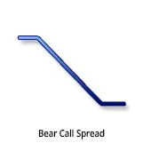
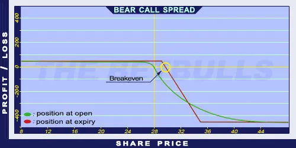

Description and use

Bear Call Spread option strategy can be profitable if the underlying’s price falls or moves within given levels. The main point is to cover the Short Call option with a higher strike Long Call. Both options’ strike price is above the current share price. Therefore, profit is going to be realised even if the share price does not change. Furthermore, the higher strike Long Call is also OTM. The investment is characterised by net credit, because the purchased options cost less than the sold options. When share prices fall, both options will expire worthless and the investor can keep the net credit. When share prices increase, the breakeven point is the lower strike plus the net credit. If the share price stays below that level, profit may be generated. Otherwise the investment is lossmaking. The direction of the market is decreasing or decreasing/neutral. It is a safe investment when the trading is short-term, one month or less.
- Type: Bearish
- Transaction type: Credit
- Maximum profit: Limited
- Maximum loss: Limited
- Strategy: Income strategy, Vertical spread
Opening the Position
Bear Call Spread Option Positions involve selling lower strike Call options and buying higher strike Call options (same quantity and expiration as the other Call options’). The strike prices should be above the current share prices.
Steps
Entry:
- Make sure the trend is inclining or stagnating at a certain level.
Exit:
- When share prices increase above the Stop Loss, buy back the Short Call options or close the positions.
- When share prices are below the lower strike price, the options will expire worthless and the investor can keep the net credit.
Basic Characteristics
- Maximum loss: Difference between strike prices - net credit.
- Maximum profit: Received net credit.
- Time decay: Time decay has a positive effect on the value when the position is profitable, and a negative effect when the position is lossmaking.
- Breakeven point: Lower strike price + net credit.
Advantages and Disadvantages
Advantages:
- Short-term strategy, it can be profitable even with sideways share prices.
- Limited from below.
Disadvantages:
- The maximum loss is larger than the maximum profit.
- In case of decreasing share prices, it has an upper limit.
Closing the Position
Buy back the Short Calls and sell the Long Calls.
Mitigation of Losses
Close the position the above-mentioned way.
Example

Bear Call Spread strategy example
- ABCD is traded for $28.00 on 12. 05. 2017. The investor sells a Short Call option which has a strike price of $30.00, expires in June 2017, and costs $1.00 (premium). Then he buys a Long Call option which has a strike price of $35.00, expires in June 2017, and costs $0.50 (premium).
- Price of the underlying (share price): S= $28.00
- Premium (Long Call): LC= $0.50
- Premium (Short Call): SC= $1.00
- Strike price (Long Call): KL= $35.00
- Strike price (Short Call): KS= $30.00
- Net credit: NCr = SC - LC
- Maximum loss (risk): R = (KL- KS) - NCr
- Maximum profit: Pr = NCr
- Breakeven point: BEP= KS + NCr
- NCr = $0.50
- R = $4.50
- Pr = $0.50
- BEP = $30.50